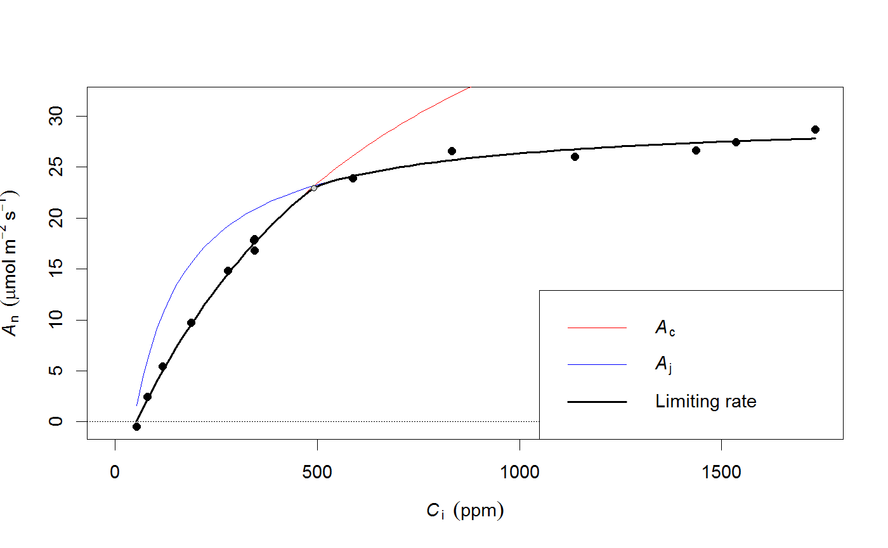
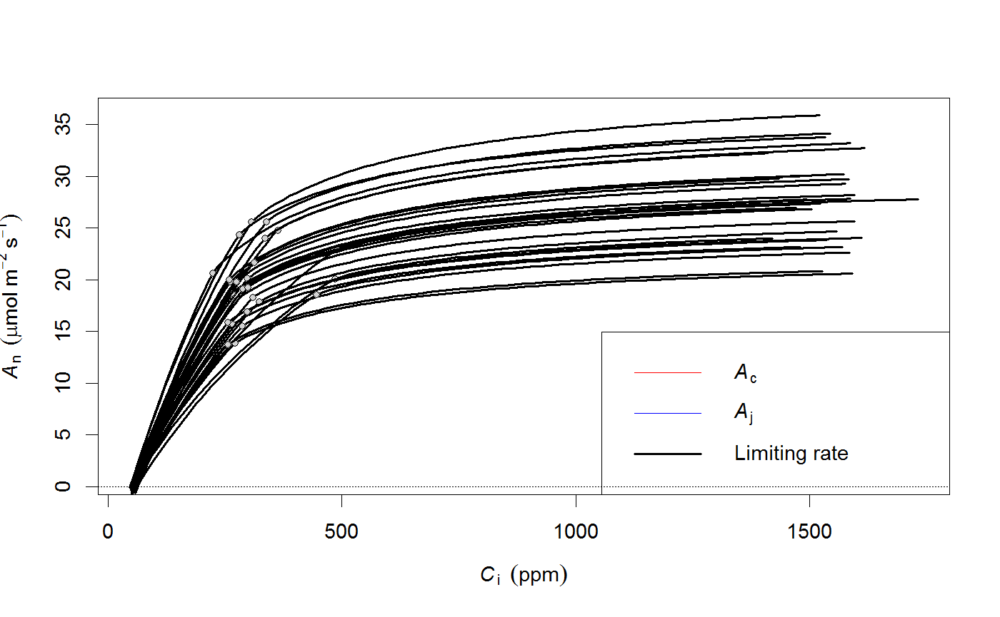
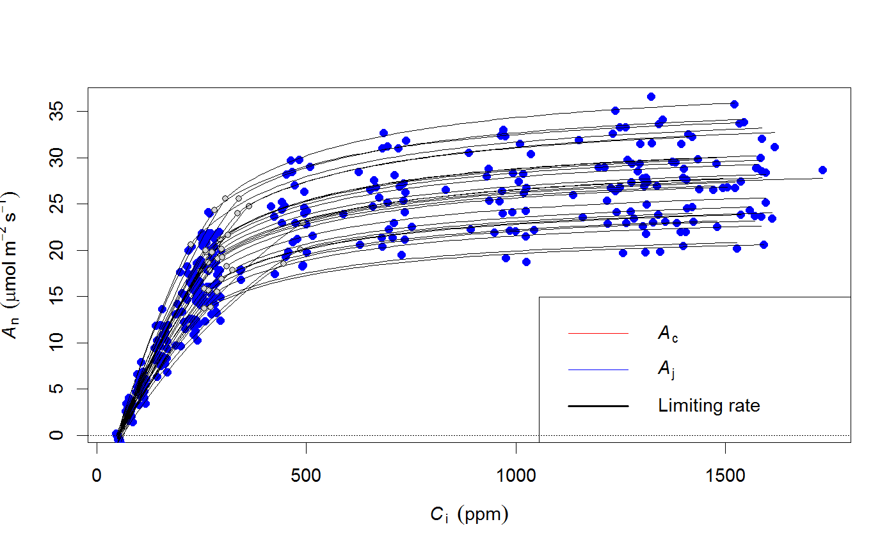
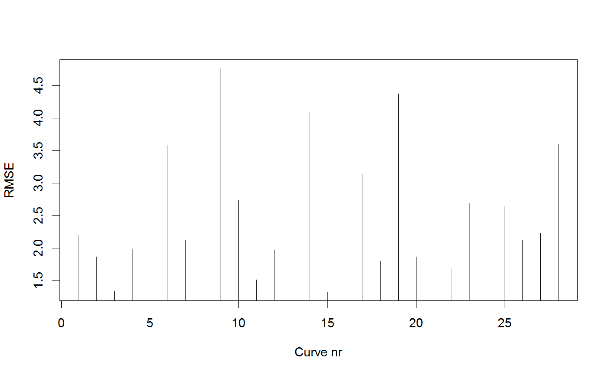
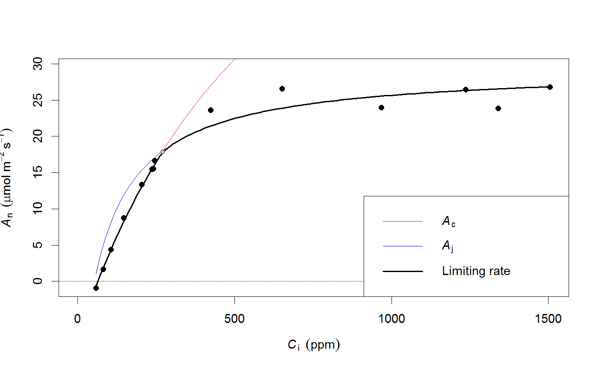

Fit multiple A-Ci curves at once
A convenient function to fit many curves at once, by calling fitaci for every group in the dataset. The data provided must include a variable that uniquely identifies each A-Ci curve.
fitacis(data, group, fitmethod = c("default", "bilinear"), progressbar = TRUE, quiet = FALSE, id = NULL, ...) # S3 method for acifits plot(x, how = c("manyplots", "oneplot"), highlight = NULL, ylim = NULL, xlim = NULL, add = FALSE, what = c("model", "data", "none"), ...)
Arguments
| data | Dataframe with Ci, Photo, Tleaf, PPFD (the last two are optional). For |
|---|---|
| group | The name of the grouping variable in the dataframe (an A-Ci curve will be fit for each group separately). |
| fitmethod | Method to fit the A-Ci curve. Either 'default' (Duursma 2015), or 'bilinear'. See Details. |
| progressbar | Display a progress bar (default is TRUE). |
| quiet | If TRUE, no messages are written to the screen. |
| id | Names of variables (quoted, can be a vector) in the original dataset to return as part of the coef() statement. Useful for keeping track of species names, treatment levels, etc. See Details and Examples. |
| … | Further arguments passed to |
| x | For |
| how | If 'manyplots', produces a single plot for each A-Ci curve. If 'oneplot' overlays all of them. |
| highlight | If a name of a curve is given (check names(object), where object is returned by acifits), all curves are plotted in grey, with the highlighted one on top. |
| xlim, ylim | The X and Y axis limits. |
| add | If TRUE, adds the plots to a current plot. |
| what | What to plot, either 'model' (the fitted curve), 'data' or 'none'. See examples. |
Details
Troubleshooting - When using the default fitting method (see fitaci), it is common that some curves cannot be fit. Usually this indicates that the curve is poor quality and should not be used to estimate photosynthetic capacity, but there are exceptions. The fitacis function now refits the non-fitting curves with the 'bilinear' method (see fitaci), which will always return parameter estimates (for better or worse).
Summarizing and plotting - Like fitaci, the batch utility fitacis also has a standard plotting method. By default, it will make a single plot for every curve that you fit (thus generating many plots). Alternatively, use the setting how="oneplot" (see Examples below) for a single plot. The fitted coefficients are extracted with coef, which gives a dataframe where each row represents a fitted curve (the grouping label is also included).
Adding identifying variables - after fitting multiple curves, the most logical next step is to analyze the coefficient by some categorical variable (species, treatment, location). You can use the id argument to store variables from the original dataset in the output. It is important that the 'id' variables take only one value per fitted curve, if this is not the case only the first value of the curve will be stored (this will be rarely useful). See examples.
References
Duursma, R.A., 2015. Plantecophys - An R Package for Analysing and Modelling Leaf Gas Exchange Data. PLoS ONE 10, e0143346. doi:10.1371/journal.pone.0143346
Examples
# Fit many curves (using an example dataset) # The bilinear method is much faster, but compare using 'default'! fits <- fitacis(manyacidat, "Curve", fitmethod="bilinear")#> | | | 0% | |== | 4% | |==== | 7% | |===== | 11% | |======= | 14% | |========= | 18% | |=========== | 21% | |============ | 25% | |============== | 29% | |================ | 32% | |================== | 36% | |==================== | 39% | |===================== | 43% | |======================= | 46% | |========================= | 50% | |=========================== | 54% | |============================= | 57% | |============================== | 61% | |================================ | 64% | |================================== | 68% | |==================================== | 71% | |====================================== | 75% | |======================================= | 79% | |========================================= | 82% | |=========================================== | 86% | |============================================= | 89% | |============================================== | 93% | |================================================ | 96% | |==================================================| 100%with(coef(fits), plot(Vcmax, Jmax))# The resulting object is a list, with each component an object as returned by fitaci # So, we can extract one curve: fits[[1]]#> Result of fitaci. #> #> Data and predictions: #> Ci Ameas Amodel Ac Aj Ap Rd VPD #> 2 53.23129 -0.4401082 0.1014381 0.9601119 2.548123 1000 0.8586158 1.5 #> 3 79.47367 2.4824630 2.1937702 3.0526198 7.036734 1000 0.8586158 1.5 #> 4 116.74688 5.4531712 4.9419337 5.8011511 11.392394 1000 0.8586158 1.5 #> 5 188.00801 9.7099879 9.5705964 10.4310194 16.447715 1000 0.8586158 1.5 #> 6 278.44662 14.8225766 14.4261545 15.2897486 19.977583 1000 0.8586158 1.5 #> 7 343.03259 17.7982155 17.4602014 18.3289218 21.639847 1000 0.8586158 1.5 #> 1 344.72152 17.9244012 17.3165146 18.1849643 21.534276 1000 0.8586158 1.5 #> 14 344.74839 16.7933747 17.6853306 18.5545917 21.774261 1000 0.8586158 1.5 #> 8 588.08078 23.8925326 24.1309683 27.0327638 25.020148 3000 0.8586158 1.5 #> 9 833.25547 26.5674409 25.7783026 33.0856065 26.647921 3000 0.8586158 1.5 #> 10 1136.99222 25.9787890 26.8108335 38.1296944 27.676768 3000 0.8586158 1.5 #> 11 1436.86370 26.6110657 27.5409345 42.0628463 28.405453 3000 0.8586158 1.5 #> 12 1536.46772 27.4018784 27.7965881 43.3773689 28.660781 3000 0.8586158 1.5 #> 13 1731.76400 28.6752069 28.0952804 45.2475932 28.959041 3000 0.8586158 1.5 #> Tleaf Cc PPFD Patm Ci_original #> 2 24.55873 53.23139 1799.959 100 53.23129 #> 3 24.58292 79.47586 1799.590 100 79.47367 #> 4 24.71278 116.75183 1799.819 100 116.74688 #> 5 24.73687 188.01759 1800.371 100 188.00801 #> 6 24.67508 278.46106 1800.233 100 278.44662 #> 7 24.76596 343.05006 1799.575 100 343.03259 #> 1 24.51593 344.73886 1800.356 100 344.72152 #> 14 24.94098 344.76609 1799.964 100 344.74839 #> 8 24.83785 588.10494 1799.477 100 588.08078 #> 9 24.91185 833.28127 1799.969 100 833.25547 #> 10 24.87314 1137.01906 1799.525 100 1136.99222 #> 11 24.95914 1436.89126 1799.615 100 1436.86370 #> 12 25.04542 1536.49554 1799.784 100 1536.46772 #> 13 25.07566 1731.79212 1799.160 100 1731.76400 #> #> Root mean squared error: 2.196037 #> #> Estimated parameters: #> Estimate Std. Error #> Vcmax 65.0009909 1.3720635 #> Jmax 131.7980133 NA #> Rd 0.8586158 0.2876248 #> Note: Vcmax, Jmax are at 25C, Rd is at measurement T. #> #> Curve was fit using method: bilinear #> #> Parameter settings: #> Patm = 100 #> alpha = 0.24 #> theta = 0.85 #> EaV = 82620.87 #> EdVC = 0 #> delsC = 645.1013 #> EaJ = 39676.89 #> EdVJ = 2e+05 #> delsJ = 641.3615 #> #> Estimated from Tleaf (shown at mean Tleaf): #> GammaStar = 42.31453 #> Km = 698.2084plot(fits[[1]])# Plot all curves in separate figures with plot(fits) # Or, in one plot: plot(fits, how="oneplot")# Note that parameters can be passed to plot.acifit. For example, plot(fits, how="oneplot", what="data", col="blue")plot(fits, how="oneplot", add=TRUE, what="model", lwd=c(1,1))# Other elements can be summarized with sapply. For example, look at the RMSE: rmses <- sapply(fits, "[[", "RMSE") plot(rmses, type='h', ylab="RMSE", xlab="Curve nr")# And plot the worst-fitting curve: plot(fits[[which.max(rmses)]])# It is very straightforward to summarize the coefficients by a factor variable # that was contained in the original data. In manyacidat, there is a factor variable # 'treatment'. # We first have to refit the curves, using the 'id' argument: fits <- fitacis(manyacidat, "Curve", fitmethod="bilinear", id="treatment")#> | | | 0% | |== | 4% | |==== | 7% | |===== | 11% | |======= | 14% | |========= | 18% | |=========== | 21% | |============ | 25% | |============== | 29% | |================ | 32% | |================== | 36% | |==================== | 39% | |===================== | 43% | |======================= | 46% | |========================= | 50% | |=========================== | 54% | |============================= | 57% | |============================== | 61% | |================================ | 64% | |================================== | 68% | |==================================== | 71% | |====================================== | 75% | |======================================= | 79% | |========================================= | 82% | |=========================================== | 86% | |============================================= | 89% | |============================================== | 93% | |================================================ | 96% | |==================================================| 100%# And now use this to plot Vcmax by treatment. boxplot(Vcmax ~ treatment, data=coef(fits), ylim=c(0,130))